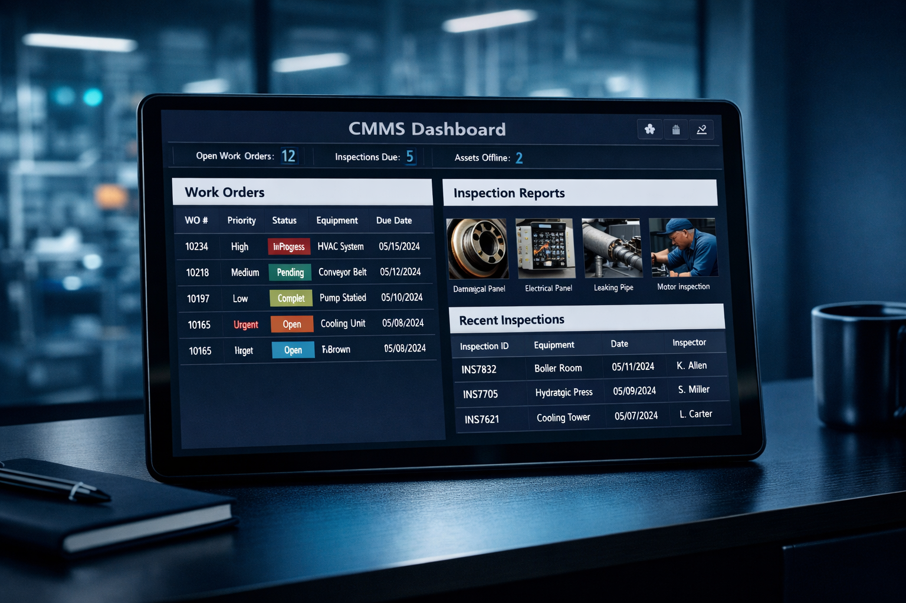

About Us
The Integration Layer Your Inspections Are Missing
Stratum Asset Intelligence was founded on a simple observation: drone service providers capture incredible data, but most of it never reaches the systems that drive maintenance decisions.
Our Mission
Turning Inspection Data into Maintenance Action
Facility managers don't need another PDF report sitting in a shared drive. They need inspection findings that automatically appear as prioritized work orders in their CMMS — with the right asset tags, severity codes, photos, and cost estimates attached.
Stratum exists to close that gap. We combine FAA-certified drone operations with deep enterprise systems expertise to deliver inspection results that are ready to act on the moment they arrive.

Our Background
Enterprise Systems Expertise Meets Drone Technology
Systems Integration Heritage
Our team brings years of experience implementing and integrating enterprise asset management platforms — including Microsoft Dynamics 365, IBM Maximo, SAP EAM, and cloud-based CMMS solutions like FIIX and UpKeep. We understand the data models, APIs, and workflows that drive maintenance operations.
Drone Operations Certified
FAA Part 107 certified with experience in commercial roof inspections, thermal imaging, and aerial photogrammetry. We don't just fly drones — we design inspection programs that produce data structured for system integration from the first flight.
Cleveland, Ohio Based
Headquartered in Greater Cleveland, we serve the industrial Midwest and beyond. Our regional focus gives us deep familiarity with the facility types, climate conditions, and roofing systems common to this part of the country.
Data-First Approach
Every inspection we perform is designed around the question: "What does the CMMS need?" We reverse-engineer the data requirements of your maintenance system and build our capture and processing workflow to meet those specifications exactly.
Our Values
What Drives Us
Data Integrity
Every data point we deliver is traceable back to a georeferenced image, a calibrated sensor reading, and a certified flight log. No guesswork.
System Compatibility
We meet your systems where they are. Whether your CMMS is cloud-native or on-premise, our integration approach adapts to your architecture.
Actionable Delivery
A report isn't a deliverable — a work order is. We measure success by how quickly your team can act on the findings we provide.